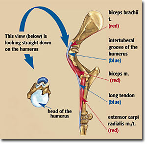
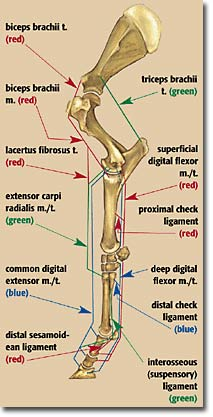
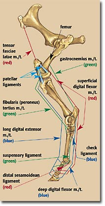

|
THE
MECHANISMS THAT LOCK A HORSE'S LEGS
|
|
 The
biceps brachii tendon originates on the end of the scapula and travels
over the intertuberal groove of the humerus. The biceps muscle attaches
inside the elbow, but also has a long tendon that joins the extensor carpi
radialis muscle, which attaches all the way down to just below the knee.
This combination allows the shoulder, elbow, and knee to be "fixed"
while standing. |
|
FRONT LEG: The
biceps tendon travels from the top of the upper foreleg bone and attaches
to the shoulder blade. The tendon is dimpled to fit over a structure called
the intertubercular crest in the center of the shoulder blade. This structure,
along with the tension exerted by the triceps brachii muscle, prevents
flexion and collapse of the forelimb. The suspensory ligament supporting
fetlock and the distal sesamoidean ligaments supporting the pastern prevent
overextension of the leg. |
|
HIND LEG: In the horse the patella (knee cap) ligament has three parts. These ligament parts lift the patella and hook it onto a big knob on the femur. When the stifle (knee) locks, the reciprocal mechanism, which makes the stifle and the hock move together, causes the hock to lock as well and the entire leg is braced. DR. ROBIN PETERSON ILLUSTRATIONS |